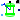

Sensors to measure variables in magnetic networks
This package provides sensors for the magnetic potential difference and the magnetic flux in magnetic circuit.
Extends from Modelica.Icons.SensorsPackage (Icon for packages containing sensors).
| Name | Description |
|---|---|
| MagneticFluxSensor | Sensor to measure magnetic flux |
| MagneticPotentialDifferenceSensor | Sensor to measure magnetic potential difference |
| Sensor to measure magnetic potential | |
|  RotorDisplacementAngle | Rotor lagging angle |
Sensor to measure magnetic flux
Sensor for magnetic flux.
MagneticPotentialDifferenceSensor
Extends from Modelica.Icons.RoundSensor (Icon representing a round measurement device), Interfaces.TwoPortElementary (Partial two port for graphical programming).
| Name | Description |
|---|---|
| port_p | Positive quasi-static magnetic port of fundamental wave machines |
| port_n | Negative quasi-static magnetic port of fundamental wave machines |
| Phi | Complex magnetic flux from por_ p to port_n as output signal |
Sensor to measure magnetic potential difference
Sensor for magnetic potential difference.
Extends from Modelica.Icons.RoundSensor (Icon representing a round measurement device), Interfaces.TwoPortElementary (Partial two port for graphical programming).
| Name | Description |
|---|---|
| port_p | Positive quasi-static magnetic port of fundamental wave machines |
| port_n | Negative quasi-static magnetic port of fundamental wave machines |
| V_m | Complex magnetic potential difference between port_p and port_n as output signal |
Sensor to measure magnetic potential
Sensor for magnetic potential difference.
Extends from Modelica.Icons.RoundSensor (Icon representing a round measurement device).
| Name | Description |
|---|---|
| V_m | Complex magnetic potential as output signal |
| port_p | Quasi-static magnetic port of sensor |
Rotor lagging angle
Calculates rotor lagging angle by measuring the stator phase voltages, transforming them to the corresponding space phasor in stator-fixed coordinate system, rotating the space phasor to the rotor-fixed coordinate system and calculating the angle of this space phasor.
The sensor's housing can be implicitly fixed (useSupport=false).
If the machine's stator also implicitly fixed (useSupport=false), the angle at the flange
is equal to the angle of the machine's rotor against the stator.
Otherwise, the sensor's support has to be connected to the machine's support.
| Name | Description |
|---|---|
| m | Number of phases |
| p | Number of pole pairs |
| positiveRange | Use only positive output range, if true |
| useSupport | Use support or fixed housing |
| Name | Description |
|---|---|
| rotorDisplacementAngle | [rad] |
| plug_p | |
| plug_n | |
| flange | |
| support | Support at which the reaction torque is acting |